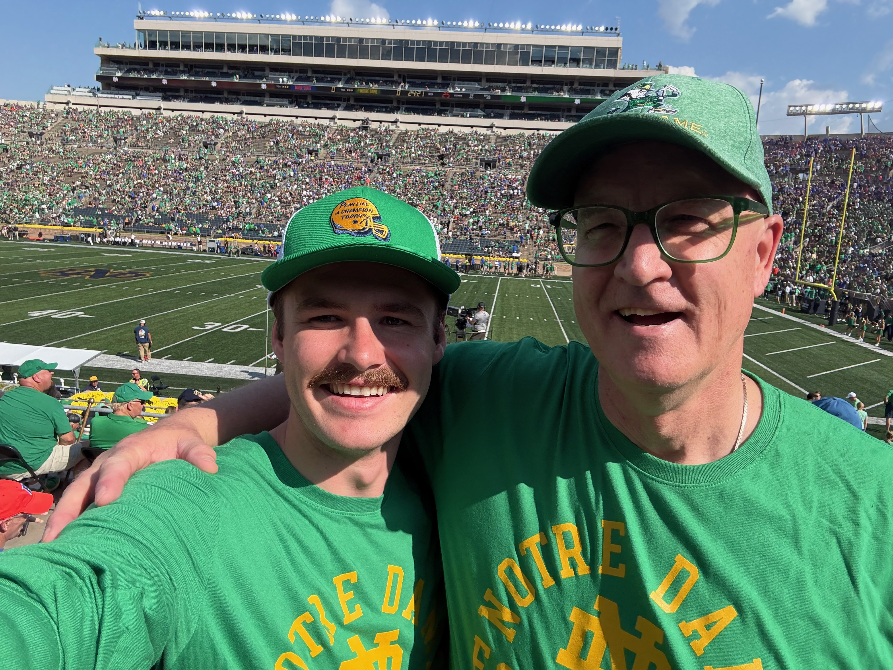
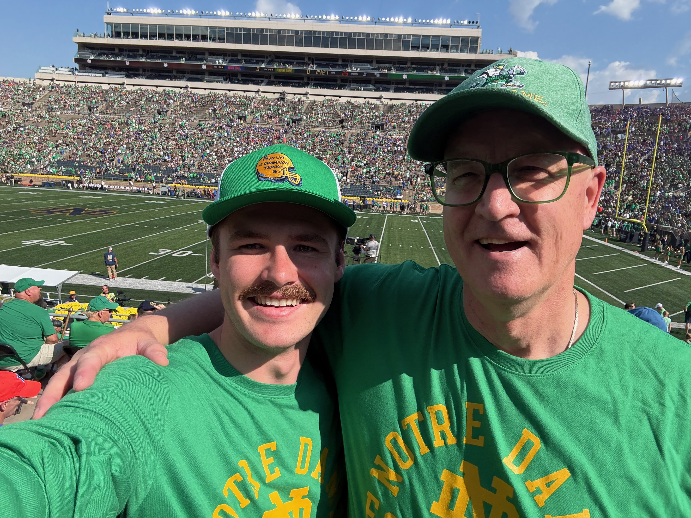
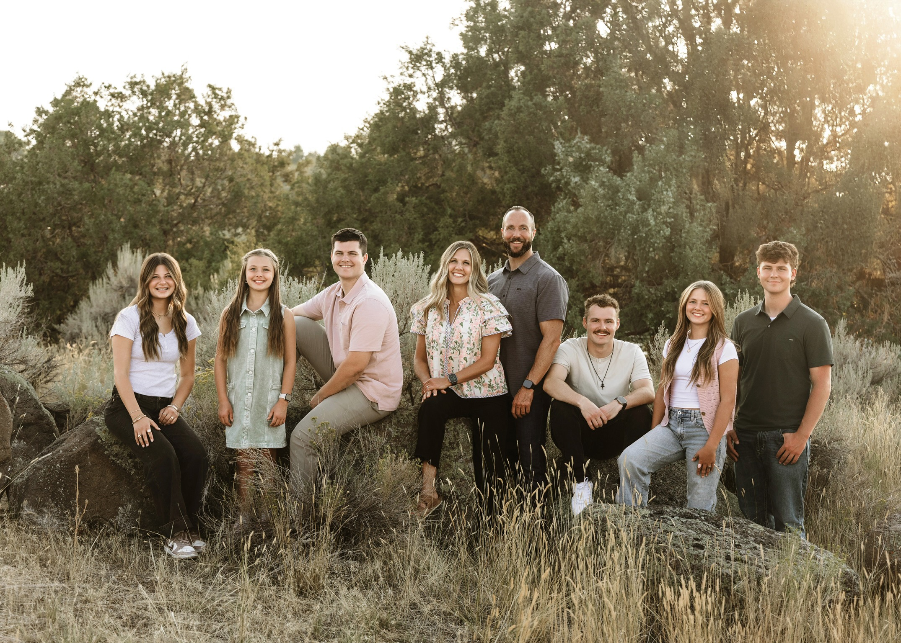
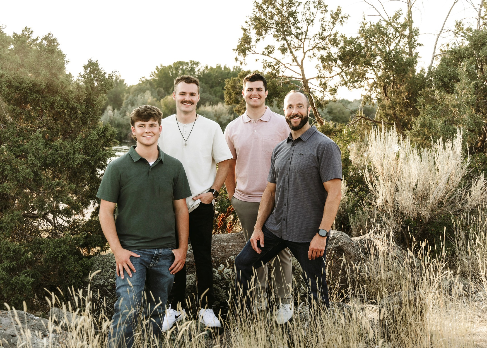
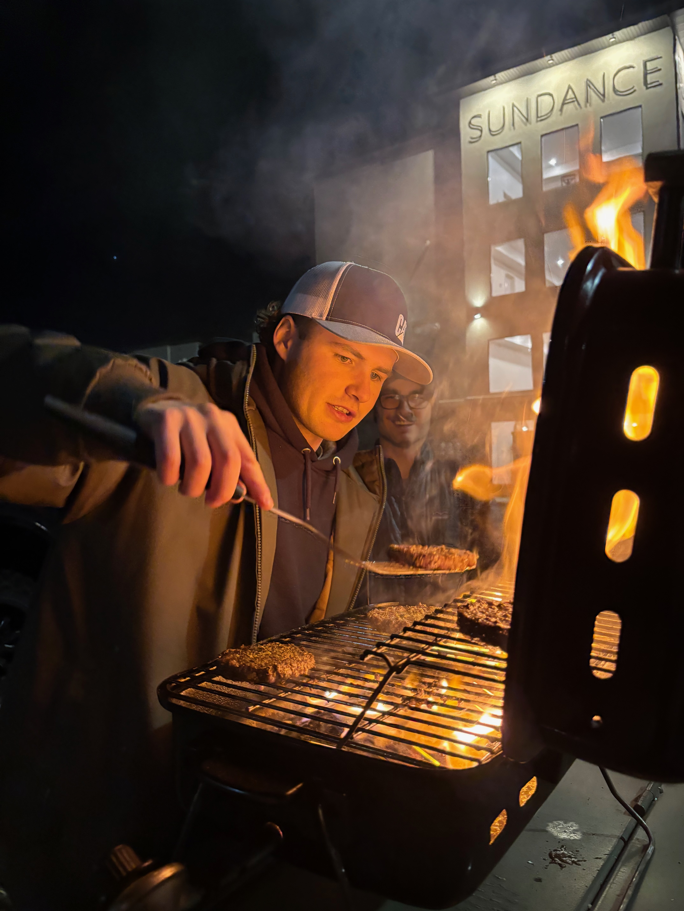
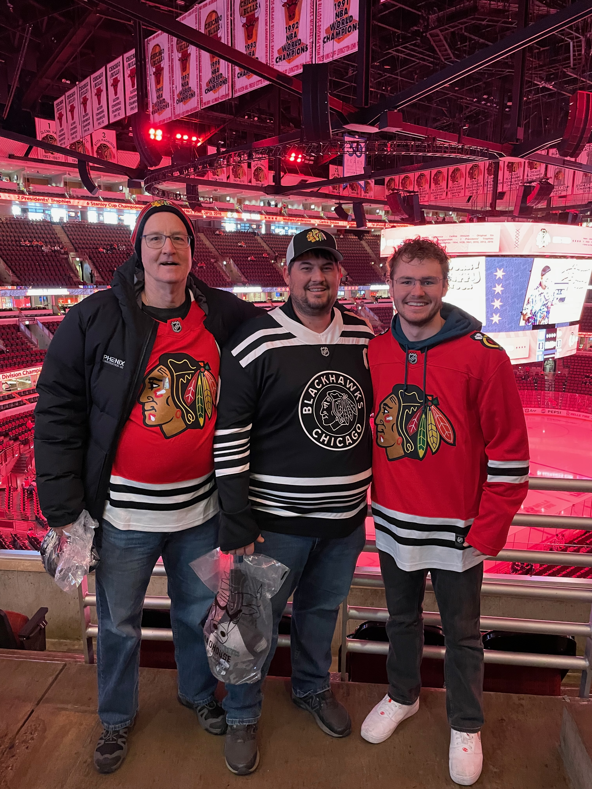

Riley Beck
Computer Science Student
Software & AI

Education
I graduated from Skyline High School in 2021. After graduation, I served a two-year mission for The Church of Jesus Christ of Latter-day Saints, where I developed discipline, leadership skills, and a strong ability to connect with people from diverse backgrounds. In 2024, I began studying Psychology at BYU–Idaho. While I valued learning about human behavior and cognition, I found myself increasingly drawn to creating and building solutions rather than only studying them. This led me to transition into Computer Science, where I could turn ideas into real, functional systems. I am currently finishing my sophomore year, building skills in programming, software design, and problem-solving, and I enjoy developing projects that turn ideas into practical, real-world solutions.
Work Experince
Throughout high school, I worked in landscaping and as a handyman, where I developed a strong work ethic and learned the value of hands-on problem-solving. I then served a two-year mission for The Church of Jesus Christ of Latter-day Saints, where I strengthened my leadership abilities, learned to connect with people from diverse backgrounds, and developed skills in resolving conflicts and solving problems between individuals. For the past two years, I have worked as a Project Engineer for an excavation company, assisting with project coordination, planning, documentation, and field operations. This role has sharpened my ability to manage complex projects, communicate across teams, and translate plans into real-world results. Across every role, I have been driven by a desire to build, improve systems, and help teams work more effectively together.
Hobbies
Outside of school and work, I love riding motorcycles, spending time outdoors, and being around the people who matter most to me. Whether it’s a ride with friends, working on bikes in the garage, a weekend adventure, or just hanging out and laughing together, I value experiences that bring energy and connection into life. I believe in working hard, but I also believe in living fully and making the most of every season.

Education
Brigham Young University
During my time at BYU–Idaho, I have studied both Psychology and Computer Science, which has given me a unique perspective on how people think and how systems are built. My background in psychology strengthened my understanding of human behavior, communication, and decision-making, while computer science has allowed me to apply that understanding in practical, technical ways. I currently serve as a mentor in the Heber J. Grant Mentorship Program, where I support and guide fellow students in their academic and personal development. Through this role, I have continued developing leadership skills, learning how to encourage growth in others, and reinforcing my belief that meaningful progress happens when strong systems and strong people work together.
Skyline Senior High School
During my time at Skyline High School, I developed a love for writing and a genuine excitement for learning. I discovered that I enjoyed not just completing assignments, but understanding ideas deeply and expressing them clearly. High school was where I first realized that growth comes from curiosity and consistent effort. That excitement for learning has continued to shape my academic path and personal development.
Work Experince
Yard Butler - Landscaping
Construction Handy Man
Phenix Construction - Project Engineer
My work experience has shaped both my technical abilities and my leadership mindset. During high school, I worked in landscaping and as a handyman, where I learned the value of discipline, physical endurance, and practical problem-solving. Those roles taught me how to take ownership of tasks, adapt when things didn’t go as planned, and deliver quality work consistently. After high school, I served a two-year mission for The Church of Jesus Christ of Latter-day Saints, where I developed strong leadership and interpersonal skills. I worked closely with diverse individuals, led teams, resolved conflicts, and learned how to navigate challenges between people with patience and clarity. For the past two years, I have worked as a Project Engineer for an excavation company, where I assist with project planning, coordination, documentation, and communication between field crews and management. This role requires attention to detail, proactive problem-solving, and the ability to manage multiple moving parts simultaneously. Across each stage of my work experience, I have grown from hands-on labor to leadership and project coordination, building both the technical and people skills necessary to contribute effectively in complex environments.
About Me
 


I was born and raised in Southeast Idaho, where I grew up with two brothers and three sisters and spent much of my time in the mountains riding snowmobiles and dirt bikes. That environment shaped my love for the outdoors, adventure, and hands-on experiences. Today, I still enjoy anything with two wheels — especially street motorcycles — along with a good movie and time well spent with the people I care about. I am a follower of Jesus Christ, and my faith influences the way I approach life, work, and relationships. I have a natural curiosity and a desire to keep learning, building, and improving in whatever season I’m in.
Photo Gallery

DirtBikes With Family
My Family
The Beck Boys
Grilling With Pals
Blackhawks With Uncle and Grandfather

The Beck Brothers